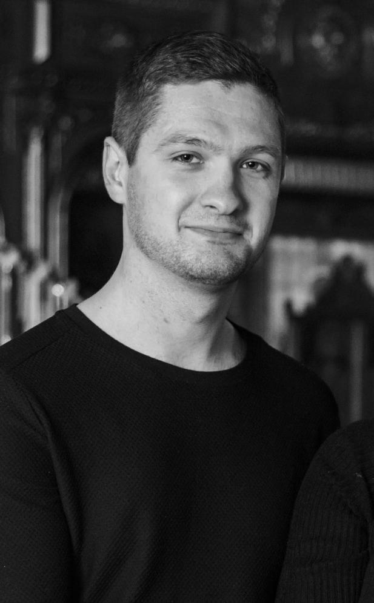

Сергій Миколайович
Бондаренко
15 вересня 1995 — 6 березня 2022
Сергій народився 15 вересня 1995 року в смт. Оратів Вінницької області, у родині ветеринарного лікаря та вчительки математики.
З 1 вересня 2001 року до 2010 року навчався у Липовецькій загальноосвітній школі І–ІІІ ступенів №2. У школі Сергій багато цікавився історією, військовими стратегіями, грав у шахи, захоплювався стрільбою з різних видів зброї. Тому після закінчення 9-го класу прийняв рішення вступити до Одеського ліцею з посиленою військово-фізичною підготовкою Одеської міської ради Одеської області. Адже в подальшому хотів бути військовим. Ліцей закінчив з відзнакою, був нагороджений похвальною грамотою, як один із кращих ліцеїстів. У турнірі з гри у шахмати, серед ліцеїстів здобув 3 місце та отримав у подарунок фотоапарат від мера міста Одеси.
Своє життя Сергій пов’язав зі Збройними Силами України та вступив до Харківського національного університету Повітряних Сил імені Івана Кожедуба на льотний факультет. Після закінчення університету Бондаренко Сергій Миколайович у званні “Лейтенанта” був направлений до 18-ї бригади армійської авіації в місто Полтаву на посаду льотчика-штурмана ВЛ ВЄ в/ч А3384. За відмінну службу наказом КСВ ЗСУ України №551 від 02.12.2018 року йому було присвоєно військове звання “Старший лейтенант”.
З 2020 року Сергій служив на посаді штурмана вертолітної ланки вертолітної ескадрильї 18-ї окремої бригади армійської авіації імені Ігоря Сікорського. Виконував бойові завдання в зоні проведення АТО, за що мав відповідні відзнаки. Мав авторитет серед товаришів по службі та керівництва бригади. А за відмінне виконання поставлених завдань наказом КСВ ЗСУ України №86 від 22.03.2021 року йому достроково присвоєно військове звання “Капітан”. У 2022 році Сергія, як кращого штурмана вертолітної ескадрильї, рекомендували до виконання миротворчої місії ООН у Демократичній Республіці Конго. У травні він мав відбути в місію. Але 24 лютого почалося повномасштабне вторгнення Росії в Україну.
В умовах надзвичайно високого ризику для життя офіцер, Бондаренко Сергій, був одним із перших українських вертолітників, які виконували успішні повітряні бої боронячи повітряний простір Херсонщини й не допускаючи прориву противника в напрямку Миколаївщини. За успішне виконання бойових завдань Сергій при житті був нагороджений орденом Богдана Хмельницького ІІІ ступеня — Указ Президента №128/2022 від 12.03.2022 року.
6 березня 2022 року під час виконання бойового завдання вертоліт був збитий ракетою ПЗРК у районі н.п. Михайлівки. Весь екіпаж загинув. Указом президента №190/2022 від 30.03.2022 за успішне виконання бойового завдання Бондаренка Сергія Миколайовича було нагороджено Орденом Богдана Хмельницького ІІ ступеня (посмертно). Нагороджено нагрудним знаком “За вірність народу України” 1 ступеня (посмертно). Присвоєно звання “Майор” (посмертно). Відповідно до пунктів 43, 46, 55 та 59 Положення про проходження громадянами України військової служби у Збройних Силах України, затвердженого Указом Президента України від 10 грудня 2008 року. Бондаренко Сергію Миколайовичу було лише 26 років, як він навіки залишився у небі. Для вшанування його пам’яті жителі міста Липовець ініціювали та підтримали перейменування вулиці, на якій нині проживають його батьки.
04Історія четверта
Спогад про те, яким Сергій залишився для близьких і що важливо передати наступним поколінням.